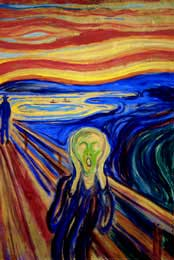
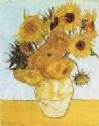
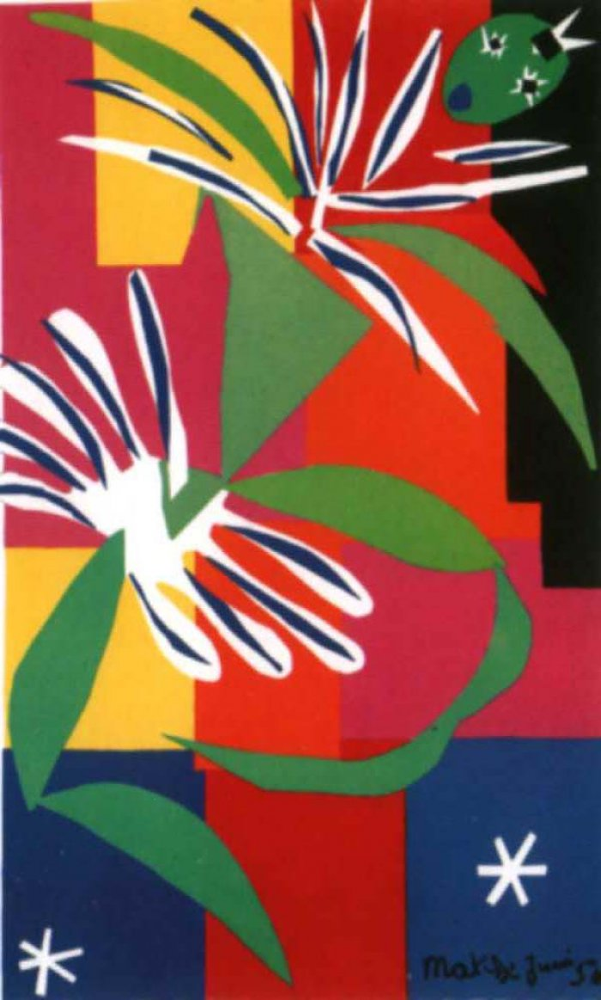

Course Description:
This course studies the Expressionist Movement from the Late 19th to Early 20th Century. Through research into the background of the movement's major artists and discussions on their major works of art, students will compare and contrast the different forms and styles of expression through art during this movement as well as analyze the impact this movement has had on current trends in modern art today. Artists of the Movement
- 
- 
- 
Course Background:
This course studies the Expressionist Movement from the Late 19th to Early 20th Century. Through research into the background of the movement's major artists and discussions on their major works of art, students will compare and contrast the different forms and styles of expression through art during this movement as well as analyze the impact this movement has had on current trends in modern art today.
Instructor Information:
- Professor Jocelyn Chambers. Ph.D.
- Art History
- Sedgewick Hall - Room 203
- University of the Netherlands
- Amstel 344, 1017 AS Amsterdam, Netherlands – 020 5513777
- Office Phone: 0-020 (555) 555-5555
- E-mail address: (put your e-mail for this project)
Related Sites:
- Timeline Art History
- Fauvism -Time Period: Early 20th Century - Geographic Center: Paris
- http://library.thinkquest.org/C0118063/time/fauvism.htm
- Representational Art
- http://www.visual-arts-cork.com/representational-art.htm
- German Expressionism
- http://www.visual-arts-cork.com/history-of-art/german-expressionism.htm
- Modern Art
- http://books.google.com/books?id=Ix0AZMqmD0cC&pg=PR21&lpg=PR21&dq=Der+Blau e+Reiter+(1909-14)+history&source=bl&ots=70yvL37djE&sig=V0ddJH2hXkmpQkrAkYR1- hMWdik&hl=en&ei=8vamSaKwGIS6nQemm5H5Dw&sa=X&oi=book_result&resnum=4& ct=result#PPP1,M1